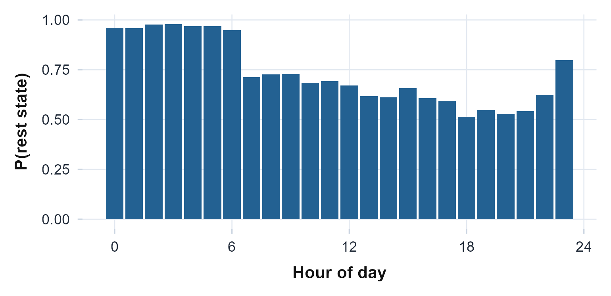

The idea, and a rule to remember
Sleep and rest detection turns a stream of activity counts into an answer to two different questions. The epoch scorers (Cole-Kripke and Sadeh) label every single minute as sleep or wake, giving a per-epoch state you can total into sleep time. The bout detectors (change-point, Roenneberg, Crespo, and the state-space model) step back and mark the spans of rest, the onset and offset clock times of each consolidated period. One tells you how much sleep, the other when it happened.
The rule to carry through this article: decide first whether
you want one main sleep window per night or every rest bout the
recording contains, because that choice, not the algorithm’s accuracy,
is what separates these functions.
sleep.changepoints() finds the single dominant rest bout of
each circadian cycle; rest.periods() and
rest.crespo() return every consolidated bout, naps
included. Asking a one-bout method for naps, or a many-bout method for
“the night”, is the most common way to misread the output.
The math
The two epoch scorers are weighted windows over the counts. Cole-Kripke (Cole et al., 1992) forms a sleep index from a seven-epoch window: four epochs before the current one (), the current epoch , and two after (). Counts are scaled by 100 and capped: and scores the epoch sleep when . Webster’s rescoring rules (Webster et al., 1982) then re-label short sleep bouts bracketed by sustained wake.
Sadeh (Sadeh et al., 1994) uses an eleven-epoch window (five each side) with counts capped at 300: where is the window mean, the count of epochs in , the standard deviation over the current and five preceding epochs, and the current count. The epoch is scored sleep when .
The change-point detector (Chen & Sun, 2024) is geometric rather than weighted: it fits a 24-hour cosinor to bound each rest and active span roughly, then places the exact transition inside each bound at the split minimising the within-segment residual sum of squares, $$ k^\* = \arg\min_k \;\sum_{i \le k}(x_i - \bar x_{\le k})^2 + \sum_{i > k}(x_i - \bar x_{>k})^2 . $$
Assumptions, and when they break
-
One-minute epochs. Cole-Kripke and Sadeh were
validated on 60-second epochs and their coefficients are tied to that
resolution; both warn if
epoch_lengthdiffers. Re-bin to one minute before scoring. -
Counts, not raw acceleration. The scorers expect
ActiGraph-style activity counts on the vertical axis; feed them counts
(
agd$axis1), not raw g. -
Non-wear is not sleep. A taken-off device reads as
deep rest. The scorers’
na_actionargument governs this: the default"na"emitsNAfor missing-count epochs so a device-off gap is not silently scored as sleep. -
A clear day-night contrast for the bout detectors.
sleep.changepoints(),rest.periods(), andrest.crespo()all need enough rhythm to separate rest from activity; on a flat or very short record they return an empty result rather than erroring.
Recovering known truth
Before trusting any of this on real data, plant an answer and check
it comes back. We build a seven-day recording with a known
nightly sleep window from 23:00 to 07:00 (near-zero activity at
night, a busy day) and ask whether the epoch scorers label the window
sleep and whether sleep.changepoints() recovers the 23:00
onset and 07:00 wake.
ts <- seq(as.POSIXct("2024-01-01", tz = "UTC"), by = 60, length.out = 7 * 1440)
hod <- as.numeric(format(ts, "%H")) + as.numeric(format(ts, "%M")) / 60
set.seed(1)
asleep <- hod >= 23 | hod < 7 # the planted sleep window
counts <- ifelse(asleep, 0, 250) + pmax(0, rnorm(length(ts), 0, 8))
ck <- sleep.cole.kripke(counts)
sd <- sleep.sadeh(counts)
knitr::kable(
data.frame(
scorer = c("Cole-Kripke", "Sadeh"),
sleep_recall = c(mean(ck[asleep] == "S"), mean(sd[asleep] == "S")),
wake_recall = c(mean(ck[!asleep] == "W"), mean(sd[!asleep] == "W"))),
digits = 3,
caption = "Both scorers label the planted 23:00-07:00 window sleep and the day wake."
)| scorer | sleep_recall | wake_recall |
|---|---|---|
| Cole-Kripke | 0.992 | 0.999 |
| Sadeh | 0.993 | 1.000 |
Both scorers tag essentially all of the night as sleep and essentially all of the day as wake. Now the change-point detector, which should place onset near 23:00 and wake near 07:00 every night:
cp <- sleep.changepoints(counts, ts)
cps_h <- as.numeric(format(cp$changepoints$time, "%H")) +
as.numeric(format(cp$changepoints$time, "%M")) / 60
knitr::kable(
data.frame(
transition = c("sleep onset", "wake onset"),
planted = c(23, 7),
recovered = c(mean(cps_h[cp$changepoints$type == "sleep onset"]),
mean(cps_h[cp$changepoints$type == "wake onset"]))),
digits = 2,
caption = "Mean recovered transition time across the seven nights vs the planted values."
)| transition | planted | recovered |
|---|---|---|
| sleep onset | 23 | 22.98 |
| wake onset | 7 | 6.98 |
c(n_episodes = cp$n_episodes, mean_sleep_duration_h = cp$mean_sleep_duration)
#> n_episodes mean_sleep_duration_h
#> 6 8The recovered onset and wake land within a minute of the planted 23:00 and 07:00, the detector finds exactly seven nightly episodes, and the mean duration is the eight hours we built in. The method recovers the truth we planted.
On a real recording
The bundled recording runs the same calls. The two scorers return a
per-epoch state vector; sleep.changepoints() returns a
per-night episode table.
agd <- agd.counts(read.agd(example_agd(1), verbose = FALSE))
table(cole_kripke = sleep.cole.kripke(agd$axis1))
#> cole_kripke
#> S W
#> 7646 2273
table(sadeh = sleep.sadeh(agd$axis1))
#> sadeh
#> S W
#> 7190 2729
cp_real <- sleep.changepoints(agd$axis1, agd$timestamp)
cp_real
#> Change-Point Sleep/Wake Detection (CircaCP)
#>
#> Span: 6.9 days (9919 epochs)
#> Cosinor acrophase: 20.5 h
#> Change points: 14 (7 sleep episodes)
#> Mean sleep duration: 11.1 h
#>
#> First sleep episodes:
#> sleep 10-07 22:36 -> wake 10-08 07:09 (8.6 h)
#> sleep 10-08 23:30 -> wake 10-09 07:50 (8.3 h)
#> sleep 10-09 21:30 -> wake 10-10 12:11 (14.7 h)
#>
#> Reference: Chen and Sun (2024)The two scorers agree closely on the total sleep fraction, and the change-point detector resolves one main sleep episode per night with onset and wake clock times.
Reading the numbers
-
sleep_state(“S”/“W”) from the scorers is a per-epoch label. Its useful summaries are the count of sleep epochs (multiply by the epoch length for sleep time) and the runs of consecutive sleep (sleep periods and their lengths). -
Onset and wake times from
sleep.changepoints()are clock times; read them as “when did the main rest bout begin and end”, and readmean_sleep_durationas the average nightly rest length. - Cole-Kripke vs Sadeh. Cole-Kripke was validated for adults (Cole et al., 1992), Sadeh for children and adolescents (Sadeh et al., 1994); pick by population. They will not agree epoch-for-epoch, and the disagreement is largest at the sleep-wake boundary, not in the middle of the night.
One bout per night, or every bout? The rest detectors compared
This is the rule in action, and it stands in for the usual “wrong-way” demo: there is no wrong algorithm here, only a wrong question. The same recording, run through four detectors, gives four different bout counts, because they answer different questions, not because three of them are wrong.
cp <- sleep.changepoints(agd$axis1, agd$timestamp) # one main bout per night
rp <- rest.periods(agd$axis1, agd$timestamp) # every bout (Roenneberg/MASDA)
rc <- rest.crespo(agd$axis1, agd$timestamp) # every bout (Crespo morphology)
hm <- rest.hmm(agd$axis1, agd$timestamp, seed = 1) # state-space alternative
knitr::kable(
data.frame(
detector = c("sleep.changepoints", "rest.periods", "rest.crespo", "rest.hmm"),
question = c("one main bout / night", "every bout (naps incl.)",
"every bout (naps incl.)", "latent rest state"),
bouts = c(cp$n_episodes, rp$n_bouts, rc$n_rest_periods, NA),
family = c("CircaCP", "Roenneberg", "Crespo", "Gaussian HMM")),
caption = "Four detectors, four counts: the difference is the question, not the accuracy."
)| detector | question | bouts | family |
|---|---|---|---|
| sleep.changepoints | one main bout / night | 7 | CircaCP |
| rest.periods | every bout (naps incl.) | 9 | Roenneberg |
| rest.crespo | every bout (naps incl.) | 4 | Crespo |
| rest.hmm | latent rest state | NA | Gaussian HMM |
sleep.changepoints() (Chen & Sun, 2024) returns one
episode per circadian cycle: the single dominant night-time rest bout.
rest.periods() (Loock et al., 2021; Roenneberg et al., 2015) and
rest.crespo() (Crespo et al., 2012) instead
consolidate every rest bout, so a daytime nap or a
fragmented night becomes its own row. They reach that result by two
independent routes, Roenneberg’s trend-and-correlation consolidation
versus Crespo’s median-filter-and-morphology pipeline, which is why
their bout counts differ even though both aim to catch all rest.
rest.hmm() (Huang et al., 2018) is the
state-space alternative: rather than thresholding each epoch, it fits a
Gaussian hidden Markov model whose latent rest state persists,
and reports a 24-hour rest-occupancy profile.
ggplot(hm$tod_profile, aes(hour, p_rest)) +
geom_col(fill = "#236192") +
scale_x_continuous(breaks = seq(0, 24, 6)) +
labs(x = "Hour of day", y = "P(rest state)") +
theme_actiRhythm()
The HMM’s probability of being in the rest state across the day. The state-space model infers the rest band, centred on the night, without a fixed count threshold.
The lesson is the rule: if you report
sleep.changepoints() you are reporting the night;
if you report rest.periods() or rest.crespo()
you are reporting all rest, naps and all. Choose the one whose
question matches yours, rather than treating the differing bout counts
as a contradiction.
The wider sleep-and-rest family
The state-space view in detail. Beyond the occupancy
profile above, rest.hmm() returns the per-state emission
means, the transition matrix, and a decoded state_path with
its own sleep_state vector, plus AIC/BIC for choosing
between a two- and three-state model (Huang et al., 2018).
hm$emission[, c("state", "label", "mean_transformed")]
#> state label mean_transformed
#> 1 1 rest 6.326781e-295
#> 2 2 active 2.812874e+01
c(time_at_rest = mean(hm$state_path == 1L),
rest_persistence = hm$transition[1, 1], AIC = hm$AIC)
#> time_at_rest rest_persistence AIC
#> 7.373727e-01 9.514564e-01 -1.604721e+05The ultradian structure within sleep. Once you have
sleep windows, lids() describes the sleep-cycle oscillation
inside them. It needs a sleep_periods data frame
with in_bed_time and out_bed_time columns
(which we build directly from the change-point episodes), transforms
activity to locomotor inactivity
(),
and fits an ultradian cosine, reporting the best period and its Munich
Rhythmicity Index (Winnebeck et al., 2018).
sleep_periods <- data.frame(
in_bed_time = cp$sleep_episodes$sleep_onset,
out_bed_time = cp$sleep_episodes$wake_onset)
li <- lids(agd$axis1, agd$timestamp, sleep_periods)
li
#> Locomotor Inactivity During Sleep (LIDS)
#>
#> Sleep periods: 7
#> Mean LIDS period: 167.9 min
#> Mean MRI: 2.844The mean LIDS period lands in the ninety-minute-to-three-hour band expected of human sleep cycles, recovered from the inactivity signal alone.
Limitations
- Epoch length is fixed for the scorers. Cole-Kripke and Sadeh are only valid at one-minute epochs; do not port their coefficients to other resolutions.
-
Bout counts are not comparable across detectors. A
larger bout count from
rest.periods()than fromsleep.changepoints()is by design, not a sign one is better; compare a detector only against itself or against its own reference implementation. - No in-bed truth. None of these methods see a diary or a true lights-off; they infer rest from movement, so a still-but-awake subject reads as rest and an active sleeper as wake. Where a diary exists, gate on it.
-
lids()depends on the supplied sleep windows. Feeding it poorly placed windows propagates straight into the period estimate; build the windows from a detector you trust on the recording at hand.
Reference and validation
The epoch scorers follow Cole et al. (1992) with the Webster rescoring rules
(Webster et al.,
1982) and Sadeh et al. (1994). The bout detectors implement the
CircaCP change-point method of Chen & Sun (2024), the Roenneberg / MASDA
consolidation (Roenneberg et al., 2015) with the
open re-implementation of Loock et al. (2021), the Crespo et al. (2012) morphology pipeline, and the
hidden-Markov rest-activity model of Huang et al.
(2018); lids()
follows Winnebeck et al. (2018). actiRhythm’s scorers and
detectors are cross-checked against their reference implementations (to
the printed precision) in the Validation
article and the package’s test suite.